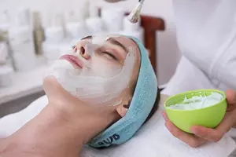

Masajes Terapéuticos y sanación alternativa
Cuerpo - Mente - Alma
Te damos la oportunidad de disfrutar de nuestros servicios de masaje corporal, faciales y
cuidados
restaurativos para la piel.Nuestros tratamientos incorporan remedios antiguos a base de
hierbas
medicinales y hierbas aromáticas para restaurar y reavivar la belleza interior y exterior
del
cuerpo.
“Junto con antiguos elixires también introducimos remedios modernos para la relajación y
desintoxicación, creando tratamientos innovadores y terapéuticos para restaurar la paz
interior
y el
bienestar total.”
Servicios
Masaje Amaterasu
El nutritivo masaje Amaterasu es nuestro masaje característico que utiliza nuestras hierbas
medicinales y aceites de masaje mezclados y elaborados con hiervas originales de la zona para
calmar completamente la mente y rejuvenecer suavemente el cuerpo. Este es un masaje completo
ideal para quienes se comprometen a mejorar su bienestar general, ya que ayuda a reequilibrar
cuerpo y mente.
Masaje de Cabeza Inka
Comenzando en una posición sentada, nuestro masaje inka de cabeza ayuda a aliviar la tensión
inducida por el estrés en la cabeza, el cuello y los hombros. También se incluye un suave masaje
facial de los nueve puntos faciales Marma.
Masaje Con Piedras De Río Caliente
Este poderoso masaje terapéutico con piedras de río caliente se utiliza rocas calientes
cuidadosamente seleccionadas del propio río. Las piedras se deslizan a lo largo de los músculos,
corrigiendo las tensiones en el nivel más profundo. La sensación de fusión promueve una profunda
sensación de relajación.
Masaje Rejuvenecedor
Este auténtico masaje indonesio utiliza aceites esenciales de hierbas medicinales y aromáticas
tradicionales, para ayudar a rejuvenecer el cuerpo. Nuestros expertos incorporan movimientos
tanto de amasar como de rodar, proporcionando un buen tratamiento terapéutico e induciendo una
relajación profunda.
Masaje de Tejido Profundo
El masaje reparador de tejido profundo, relaja el cuerpo, lo drena de toxinas y permite la
liberación de patrones de tensión profundamente arraigados. Las técnicas utilizadas durante este
tratamiento relajante ayudan a aumentar el flujo sanguíneo y linfático, para que los músculos
puedan volver a funcionar a plena capacidad.
Facial Kobido

Nuestro facial Kobido con infusión de hierbas y barro medicinales del volcan comprende una
antigua rutina de limpieza seguida de un lujoso masaje facial Gua sha diseñado para nutrir
profundamente la piel. Ofrecemos este tratamiento en una versión de limpieza profunda o
superhidratante, podemos personalizar el tratamiento para calmar la piel sensible o
problemática. Promueve una piel sana y radiante, así como una función celular renovada.
Masajes Pies Cansados
Los masajes de pies se han practicado durante cientos de años como una forma natural de aliviar
la presión y el dolor en los mismos. Es importante cuidar los pies con regularidad, no solamente
para reducir la posibilidad de un problema que pueda limitar la movilidad, sino también porque
los pies están conectados por los canales de energía con todos los órganos del cuerpo.
El masaje en los pies crea un poderoso efecto de relajación en el cuerpo, el cual es percibido
de manera prácticamente instantánea.
Masaje Reductor con Maderoterapia
La Maderoterapia, una técnica alternativa para modelar nuestro cuerpo, una novedad en masajes
reductores. Se trata de un tratamiento reductor y reafirmante en el que se usan instrumentos de
madera
impregnados en aceites esenciales. Indicada para tratar la celulitis, reafirmar, tonificar,
reducir medidas y tornear el cuerpo.
Nivelación de las Chakras
Existe siete centros de energía principales (chakras) del cuerpo. Estos chakras son como
espirales de energía, cada uno relativo a los demás. El uso de los siete colores del espectro,
la terapia del color tiene como objetivo equilibrar y mejorar los centros de energía de nuestro
cuerpo y también para ayudar a estimular el proceso de curación de nuestro cuerpo, mente y alma.
Locales
Cusco
Av. De la cultura lote 3. Urb. Picol(Paradero Larapa) San Jeronimo. Reserva tu
cita: 979398170